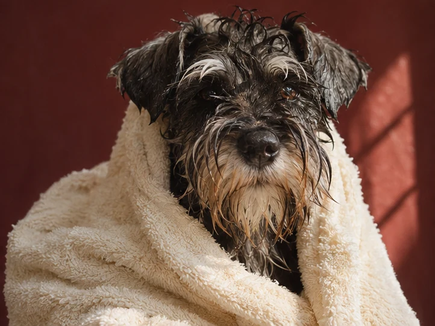
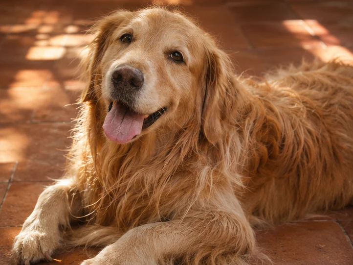

O ritual começa no banho.

Da água morna ao acabamento, descubra o que entra em cada cuidado e monte o seu pedido de exemplo.
Explorar a carta
Antes de cortar, combine.
Escolha um serviço na carta e converse sobre o comprimento e o acabamento que imagina. A avaliação da pelagem acontece na chegada.